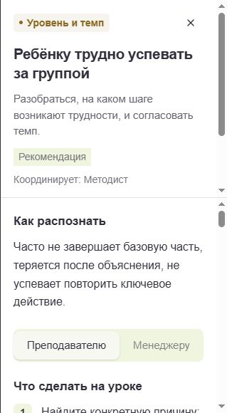

Креайтивика / Поддержка преподавателей и менеджеров
База знаний команды
Ситуации, действия по ролям и шаблоны сообщений в одном месте.
Моя роль: методист53 ситуации · открытый просмотр
Помощь в момент рабочей задачи
53ситуации в базе
2роли: преподаватель и менеджер
1маршрут от проблемы до проверки
- Поиск и категории: навыки, темп, поведение, родители, методика, организация, техника.
- Для каждой роли — свои действия, готовые шаблоны сообщений и условия подключения коллег.
- Преподаватель может уточнить вопрос у методиста, сохранить ситуацию и вернуться к решению.
Можно посмотреть без входа
ПРИМЕР ИЗ БАЗЫ
Ребёнку трудно успевать за группой
Часто не завершает базовую часть, теряется после объяснения и не успевает повторить ключевое действие.
Что сделать преподавателю
- Найти конкретную причину: пробел в теме, длинная инструкция или быстрый темп.
- Разбить задачу на короткие шаги и дать образец результата.
- Подготовить базовую и дополнительную версии задания.
Как проверить результат
Через 1–2 занятия дать аналогичную задачу и сравнить самостоятельное начало, завершение и объём помощи.

Фрагмент интерфейса базы знаний. Нажмите, чтобы увеличить.Обучение преподавателей
01Открытие знания
Проблема → поиск объяснения → первая практика.
02Закрепление
Практика по образцу → самостоятельная задача → обратная связь.
03Проект
Задача → планирование → продукт → защита.
04Рефлексия и контроль
Проверка понимания → разбор затруднений → следующий шаг.
Четыре типа уроков из методического пособия для преподавателей Креайтивики.